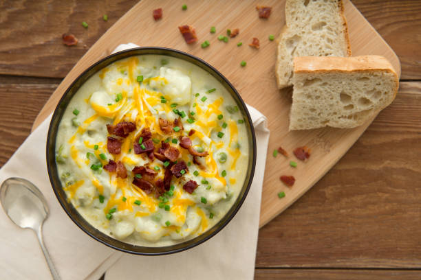

Potato Soup

Description
Easy, rich, and creamy - this potato soup makes for an easy dinner.
Ingredients
- Bacon
- Onion
- Carrots
- Celery
- Potatoes
- Salt
- Pepper
- Cajun
- Broth
- Flour
- Milk
- Heavy Cream
- Shredded Cheese
- Parsley
Steps
- To a soup pot over medium heat, add the bacon pieces and cook until crisp and the fat is rendered. Remove the bacon from the pot and set it aside. Pour off most of the grease, but do not clean the pot.
- Return the pot to medium-high heat and add the onion, carrot, and celery. Stir and cook for 2 minutes or so, then add the diced potatoes. Cook for 5 minutes, seasoning with salt, pepper, and Cajun spice.
- Pour in the broth and bring it to a gentle boil. Cook for 10 minutes, or until the potatoes start to get tender. Whisk together the flour and the milk, then pour it into the soup and allow the soup to cook for another 5 minutes.
- Remove half to two-thirds of the soup and blend, in batches, in a blender or food processor until completely smooth. (Note: Use caution when blending hot soup; if possible, allow the soup to cool before blending.) Pour it back into the soup pot and stir to combine. Let it heat back up as you taste for seasonings, adding more of what it needs. Stir in the cream, then stir in the parsley, reserving a little for garnish.
- Serve in bowls with parsley, cheese, and crispy bacon pieces.